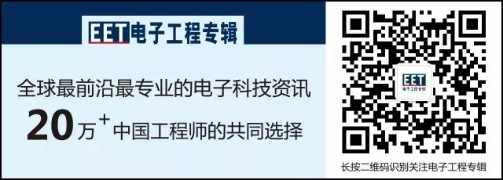

什么是TTL电平、CMOS电平、RS232电平？它们有什么区别呢？一般说来，CMOS电平比TTL电平有着更高的噪声容限。
（一）、TTL电平标准
输出 L：<0.8V ；H：>2.4V。
输入 L：<1.2V ；H：>2.0V
TTL器件输出低电平要小于0.8V，高电平要大于2.4V。输入，低于1.2V就认为是0，高于2.0就认为是1。于是TTL电平的输入低电平的噪声容限就只有(0.8-0)/2=0.4V，高电平的噪声容限为(5-2.4)/2=1.3V。
（二）、CMOS电平标准
输出 L：<0.1*Vcc ；H：>0.9*Vcc。
输入 L：<0.3*Vcc ；H：>0.7*Vcc.
由于CMOS电源采用12V，则输入低于3.6V为低电平，噪声容限为1.8V，高于3.5V为高电平，噪声容限高为1.8V。比TTL有更高的噪声容限。
（三）、RS232标准
逻辑1的电平为-3～-15V，逻辑0的电平为+3～+15V，注意电平的定义反相了一次。
TTL与CMOS电平使用起来有什么区别
1、电平的上限和下限定义不一样，CMOS具有更大的抗噪区域。 同是5伏供电的话，ttl一般是1.7V和3.5V的样子，CMOS一般是2.2V,2.9V的样子，不准确，仅供参考。
2、电流驱动能力不一样，ttl一般提供25毫安的驱动能力，而CMOS一般在10毫安左右。
3、需要的电流输入大小也不一样，一般ttl需要2.5毫安左右，CMOS几乎不需要电流输入。
4、很多器件都是兼容TTL和CMOS的，datasheet会有说明。如果不考虑速度和性能，一般器件可以互换。但是需要注意有时候负载效应可能引起电路工作不正常，因为有些ttl电路需要下一级的输入阻抗作为负载才能正常工作。
（1）TTL电路和CMOS电路的逻辑电平
VOH:逻辑电平 1 的输出电压
VOL:逻辑电平 0 的输出电压
VIH:逻辑电平 1 的输入电压
VIH:逻辑电平 0 的输入电压
TTL电路临界值：
VOHmin =2.4VVOLmax =0.4V
VIHmin =2.0VVILmax =0.8V
CMOS电路临界值（电源电压为＋5V）
VOHmin =4.99V VOLmax =0.01V
VIHmin =3.5VVILmax =1.5V
（2）TTL和CMOS的逻辑电平转换
CMOS电平能驱动TTL电平
TTL电平不能驱动CMOS电平，需加上拉电阻。
（3）常用逻辑芯片特点
74LS系列：TTL 输入: TTL 输出:TTL
74HC系列：CMOS输入: CMOS输出:CMOS
74HCT系列：CMOS输入: TTL 输出:CMOS
CD4000系列：CMOS输入: CMOS 输出:CMOS
广告